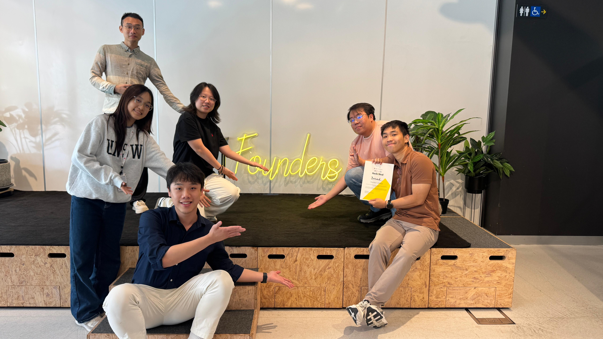
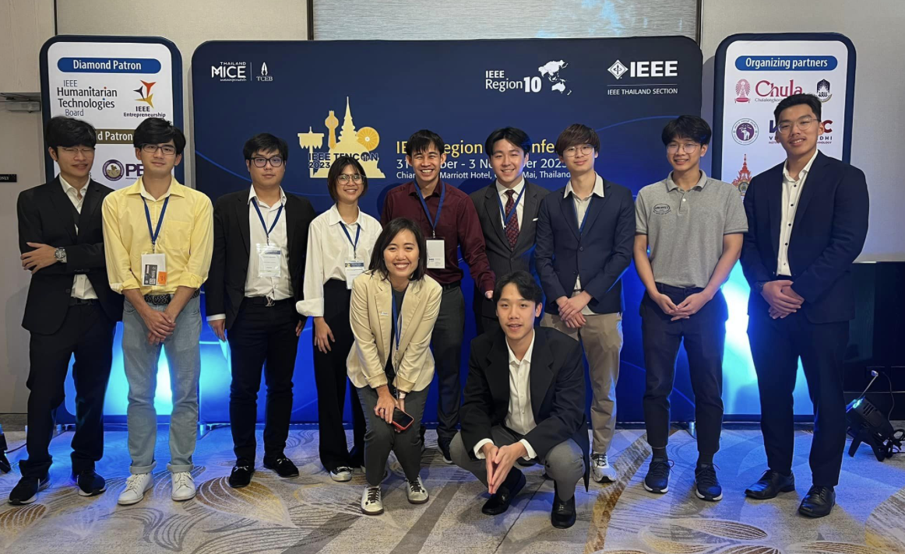

Summary
I’m a passionate developer who loves automation, cloud computing, and data-driven applications. I enjoy learning new technologies and building tools that make life easier.
Background
💼 Work Experience
🎓 Education
Notable Achievement
Hack2Heal Hackathon - Founder's Choice award winner
 View Project →IEEE Region 10: TENCON 2023 - Co-author and speaker
Publication: Position Accuracy of a 6-DOF Passive Robotic Arm
 View Project →Projects
File Ingestion with Agent Orchestration
PoC from internship at NodesNow. Langgraph agent orchestrated with Inngest
Stay tuned!